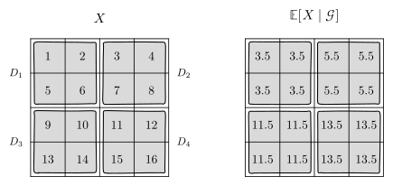

5 Conditional probability and conditional expectation
Conditional probability is perhaps the most important aspect of probability theory, because it explains how to incorporate new information into a probability model. In this lecture, we start from conditioning on events, then interpret conditioning as averaging given a finite information \(σ\)-algebra, and specialize that view to finite-valued random variables. We then treat continuous random variables, where zero-probability events force a more abstract definition of conditional expectation and conditional density.
5.1 Conditioning on events
Recall that conditional probability for events is defined as follows: given a probability space \((Ω, \ALPHABET F, \PR)\) and events \(A, B \in \ALPHABET F\) such that \(\PR(B) > 0\), we have \[ \PR(A \mid B) = \frac{\PR(A \cap B)}{\PR(B)}. \]
Building on this definition, we can define the conditional CDF of a random variable \(X\) conditioned on an event \(C\) (such that \(\PR(C) > 0\)) as follows: \[ F_{X|C}(x \mid C) = \PR(X \le x \mid C) = \frac{\PR( \{ X \le x \} \cap C)}{\PR(C)}. \]
As we pointed out in conditional probabilities are probabilities, the conditional CDF defined above satisfies the properties of regular CDFs. In particular,
- \(0 \le F_{X|C}(x\mid C) \le 1\)
- \(\displaystyle \lim_{x \to -∞} F_{X|C}(x \mid C) = 0\)
- \(\displaystyle \lim_{x \to +∞} F_{X|C}(x \mid C) = 1\)
- \(F_{X|C}(x \mid C)\) is a non-decreasing function.
- \(F_{X|C}(x \mid C)\) is a right-continuous function.
Since \(F_{X|C}\) is a CDF, we can classify the conditional distribution of \(X\) in the usual way. In particular,
If the conditional distribution is discrete with support \(\text{range}(X\mid C) = \{x_1, x_2, \dots\}\), then \(F_{X|C}\) is piecewise constant and the conditional PMF \(P_{X|C} \colon \reals \to [0,1]\) is \[ P_{X|C}(x\mid C) = F_{X|C}(x\mid C) - F_{X|C}(x^{-} \mid C). \]
If \(F_{X|C}\) is absolutely continuous, then the conditional distribution is continuous and has a conditional PDF \(f_{X|C}\) given, for almost every \(x\), by \[ f_{X|C}(x\mid C) = \frac{d}{dx} F_{X|C}(x \mid C). \]
If the conditional distribution has both discrete and continuous components, then it is a mixed distribution.
Therefore, a random variable conditioned on an event behaves exactly like a regular random variable. We can define conditional expectation \(\EXP[X \mid C]\), conditional variance \(\VAR(X \mid C)\) in the obvious manner.
If \(X\) is a random variable with \(\EXP[\ABS{X}] < ∞\) and \(C\) is an event with \(\PR(C) > 0\), then \(\EXP[X | C]\) is defined as the expectation with respect to the conditional CDF \(F_{X|C}\). In particular, \[ \EXP[ X \mid C] = \frac{\EXP[ X \IND_{C}]}{\PR(C)}. \]
An immediate implication of the law of total probability is the following.
If \(C_1, C_2, \dots, C_n\) is a partition of \(Ω\), then \[ F_X(x) = \sum_{i=1}^n F_{X|C_i}(x \mid C_i) \PR(C_i). \] Furthermore, if the conditional distribution of \(X\) given \(C_i\) is discrete for every \(i\), then \[ P_X(x) = \sum_{i=1}^n P_{X|C_i}(x \mid C_i) \PR(C_i). \] If the conditional distribution of \(X\) given \(C_i\) is continuous for every \(i\), then \[ f_X(x) = \sum_{i=1}^n f_{X|C_i}(x \mid C_i) \PR(C_i). \]
If \(C_1, C_2, \dots, C_n\) is a partition of \(Ω\), then we can write \[ X = \sum_{i=1}^n X \IND_{C_i}. \] This gives us the law of total expectation \[ \EXP[X] = \sum_{i=1}^n \EXP[ X \mid C_i ] \PR(C_i). \]
Example 5.1 Consider the following experiment. A fair coin is tossed. If the outcome is heads, \(X\) is a uniform \([0,1]\) random variable. If the outcome is tails, \(X\) is a \(\text{Bernoulli}(p)\) random variable. Find \(F_X(x)\).
NoteSolution
Let \(C_H\) denote the event that the coin shows heads and \(C_T\) the event that it shows tails. The coin is fair, so \(\PR(C_H) = \PR(C_T) = \frac{1}{2}\).
- If heads (\(C_H\)): \(X \sim \text{Uniform}[0,1]\), so the conditional CDF is \[ F_{X|C_H}(x) = \begin{cases} 0, & x < 0 \\ x, & 0 \leq x \leq 1 \\ 1, & x > 1 \end{cases} \]
- If tails (\(C_T\)): \(X \sim \text{Bernoulli}(p)\), so the conditional CDF is \[ F_{X|C_T}(x) = \begin{cases} 0, & x < 0 \\ 1-p, & 0 \leq x < 1 \\ 1, & x \geq 1 \end{cases} \]
By the law of total probability, \[\begin{align*} F_X(x) &= F_{X|C_H}(x)\, \PR(C_H) + F_{X|C_T}(x)\, \PR(C_T) \\ &= \frac{1}{2} F_{X|C_H}(x) + \frac{1}{2} F_{X|C_T}(x) \end{align*}\]
So, \[ F_X(x) = \begin{cases} 0, & x < 0 \\\\ \frac{1}{2}x + \frac{1}{2}(1-p), & 0 \leq x < 1 \\\\ \frac{1}{2} \cdot 1 + \frac{1}{2} \cdot 1 = 1, & x \geq 1 \end{cases} = \begin{cases} 0, & x < 0 \\ \frac{1}{2}x + \frac{1-p}{2}, & 0 \leq x < 1 \\ 1, & x \geq 1 \end{cases} \] Thus, \(X\) is a mixed random variable.
Example 5.2 (Memoryless property of geometric random variable) Let \(X \sim \text{geometric}(p)\) and \(m,n\) be positive integers. Compute \[ \PR(X > n + m \mid X > m). \]
NoteSolution
Recall that the PMF of a geometric random variable is \[ P_X(k) = p (1-p)^{k-1}, \quad k \in \naturalnumbers. \] Therefore, \[ \PR(X > m) = \sum_{k = m + 1}^∞ P_X(k) = \sum_{k=m+1}^{∞} p (1-p)^{k-1} = (1-p)^m. \]
Now consider \[\begin{align*} \PR(X > m + n \mid X > m) &= \frac{ \PR(\{ X > m + n \} \cap \{X > m \}) } {\PR(X > m) } \\ &= \frac{ \PR(X > m + n ) } {\PR(X > m) } \\ &= \frac{(1-p)^{m+n}}{(1-p)^m} = (1-p)^n = \PR(X > n). \end{align*}\]
This is called the memoryless property of a geometric random variable.
Example 5.3 (Memoryless property of exponential random variable) Let \(X \sim \text{Exponential}(λ)\) and \(t,s\) be positive reals. Compute \[ \PR(X > t + s \mid X > t). \]
NoteSolution
Recall that the PDF of an exponential random variable is \[ f_X(x) = λ e^{-λ x}, \quad x \ge 0. \] Therefore, \[ \PR(X > t) = \int_{t}^{∞} f_X(x)\, dx = e^{-λ t}. \]
Now consider \[\begin{align*} \PR(X > t + s \mid X > t) &= \frac{ \PR(\{ X > t + s \} \cap \{X > t \}) } {\PR(X > t) } \\ &= \frac{ \PR(X > t + s ) } {\PR(X > t) } \\ &= \frac{e^{-λ(t+s)}}{e^{-λt}} = e^{-λs} = \PR(X > s). \end{align*}\]
This is called the memoryless property of an exponential random variable.
Example 5.4 Suppose \(X\) and \(Y\) are random variables that are uniformly distributed in the shaded region shown in Figure 5.1. Compute \[ \PR( X - Y < 1 \mid Y < 2). \]
NoteSolution
Define the events \[ A = \{ ω : X(ω) - Y(ω) < 1 \} \quad\text{and}\quad B = \{ ω : Y(ω) < 2 \}. \] These are shown in Figure 5.2.
Observe that \[ f_{X,Y}(x,y) = \frac 18, \quad 0 < y < x < 4. \] We are interested in computing \[ \PR(A \mid B) = \frac{\PR(A \cap B)}{\PR(B)}. \] We will compute the numerator and denominator separately. Since the joint density is constant and equal to \(1/8\) on the light-blue support, the probability of each highlighted region is \(1/8\) times its area. The areas may be computed geometrically or by integration; we follow the latter approach here.
Observe that \[ \PR(A\cap B) = \int_{0}^2 \int_{y}^{y+1} \frac 18 dx dy = \int_{0}^{2} \frac 18 dy = \frac 14. \]
Similarly \[ \PR(B) = \int_{0}^2 \int_{y}^{4} \frac 18 dx dy = \int_{0}^2 \frac{1}{8}(4 - y) dy = \frac 34. \] Thus, \[ \PR(A \mid B) = \frac{\PR(A \cap B)}{\PR(B)} = \frac{1}{3}. \]
5.2 Conditioning on finite \(σ\)-algebras
Conditioning on an event \(C\) updates the model when we learn that \(C\) occurred. More generally, the information we receive may be coarser or finer than a single event: it may tell us which cell of a finite partition of \(Ω\) contains the outcome, without identifying the outcome itself. A finite \(σ\)-algebra is exactly that kind of information: it is generated by its atoms, and two outcomes that lie in the same atom cannot be distinguished. Conditional expectation given such information replaces a random variable by its average on each atom. To avoid technical subtleties, we first restrict attention to finite \(σ\)-algebras.
Consider a probability space \((Ω, \ALPHABET F, \PR)\) where \(\ALPHABET F\) is a finite \(σ\)-algebra. Let \(\ALPHABET G\) be a sub-\(σ\)-algebra of \(\ALPHABET F\). In particular, we assume that there is a partition \(\{D_1, D_2, \dots, D_m\}\) of \(Ω\) such that \(\ALPHABET G = σ(D_1, \dots, D_m)\). The elements \(D_1, \dots, D_m\) are called the atoms of the \(σ\)-algebra \(\ALPHABET G\).
For any integrable random variable \(X\) (or any non-negative random variable \(X\)), we define the \(\ALPHABET G\)-measurable random variable \[ \EXP[X \mid \ALPHABET G](ω) = \sum_{i=1}^m \EXP[X \mid D_i] \IND_{D_i}(ω). \] Thus, on each \(ω \in D_i\), the value of \(\EXP[X \mid \ALPHABET G]\) is \(\EXP[X \mid D_i]\).
As an illustration, let \(Ω\) consist of \(16\) equally likely outcomes, arranged as a \(4\times4\) grid. The shaded regions in Figure 5.3 partition \(Ω\) into four atoms \(D_1,D_2,D_3,D_4\), each containing four outcomes. Let \(\ALPHABET G\) be the \(σ\)-algebra generated by this partition.
Knowing \(\ALPHABET G\) means knowing which shaded atom contains the outcome, but not knowing which of its four cells occurred. Suppose the random variable \(X\) takes the values shown in the left panel of Figure 5.3.

Figure 5.3: Conditional expectation retains exactly the distinctions available in the information \(σ\)-algebra. The left panel shows \(X\); the right panel shows \(\EXP[X\mid\ALPHABET G]\). On the atom \(D_1\), \[ \EXP[X\mid D_1]=\frac{1+2+5+6}{4}=3.5. \] Repeating this calculation for the other atoms gives \[ \EXP[X\mid\ALPHABET G] =3.5\IND_{D_1}+5.5\IND_{D_2} +11.5\IND_{D_3}+13.5\IND_{D_4}. \] Thus, \(\EXP[X\mid\ALPHABET G]\) is constant on every atom of \(\ALPHABET G\): outcomes that cannot be distinguished using the available information receive the same conditional estimate.
When \(X = \IND_A\), we write the conditional expectation as a conditional probability: \[ \EXP[\IND_A \mid \ALPHABET G](ω) = \PR(A \mid \ALPHABET G)(ω) = \sum_{i=1}^m \PR(A \mid D_i)\IND_{D_i}(ω). \]
When \(\ALPHABET G = \{\emptyset, Ω\}\) is the trivial \(σ\)-algebra, \[ \EXP[X \mid \{\emptyset, Ω\}] = \EXP[X]. \]
If \(X\) is \(\ALPHABET G\)-measurable, then \[ \EXP[X \mid \ALPHABET G] = X. \]
If \(X\) is independent of \(\ALPHABET G\) (that is, \(σ(X)\) is independent of \(\ALPHABET G\)), then \[ \EXP[X \mid \ALPHABET G] = \EXP[X]. \] Thus, information that is independent of \(X\) does not change our estimate of \(X\).
If \(X_1\) and \(X_2\) are jointly distributed random variables and \(a_1\) and \(a_2\) are constants, then \[ \EXP[a_1 X_1 + a_2 X_2 \mid \ALPHABET G] = a_1 \EXP[X_1 \mid \ALPHABET G] + a_2 \EXP[X_2 \mid \ALPHABET G]. \]
If \(Y\) is another random variable which is \(\ALPHABET G\)-measurable (i.e., \(Y\) takes constant values on the atoms of \(\ALPHABET G\)), then \[ \EXP[XY \mid \ALPHABET G] = Y \EXP[X \mid \ALPHABET G]. \]
Indeed, on each atom \(D_i\) the random variable \(Y\) is constant, say equal to \(y_i\), so \[ \EXP[XY \mid D_i] = y_i \EXP[X \mid D_i], \] and assembling the atoms recovers \(\EXP[XY \mid \ALPHABET G] = Y \EXP[X \mid \ALPHABET G]\). (The same picture as Figure 5.3 applies, with the values of \(X\) on each atom scaled by the constant value of \(Y\) there.)
Let \(\ALPHABET H \subset \ALPHABET G \subset \ALPHABET F\), where \(\subset\) means sub-\(σ\)-algebra. Let \(\{E_1, \dots, E_k\}\) denote the partition corresponding to \(\ALPHABET H\) and \(\{D_1, \dots, D_m\}\) denote the partition corresponding to \(\ALPHABET G\). Each atom \(E_i\) of \(\ALPHABET H\) is a union of atoms of \(\ALPHABET G\); equivalently, \(\{D_1, \dots, D_m\}\) is a refinement of \(\{E_1, \dots, E_k\}\). Therefore, \[\begin{equation}\tag{smoothing-property} \bbox[5pt,border: 1px solid] {\EXP[\EXP[X \mid \ALPHABET G] \mid \ALPHABET H] = \EXP[X \mid \ALPHABET H].} \end{equation}\] This is known as the smoothing property of conditional expectation.
A special case is \[ \EXP[\EXP[X \mid \ALPHABET G]] = \EXP[X], \] where \(\ALPHABET H = \{\emptyset, Ω\}\) is the trivial \(σ\)-algebra. This is the conditional-expectation version of the law of total expectation.
5.3 Conditioning on finite-valued random variables
A finite-valued random variable \(Y\) generates the finite \(σ\)-algebra \(σ(Y)\). Its atoms are the events \(\{Y=y\}\), \(y \in \ALPHABET Y\). Thus, conditioning on \(Y\) is conditioning on the information \(σ(Y)\), and we use the shorthand \[ \PR(A \mid Y) = \PR(A \mid σ(Y)), \qquad \EXP[X \mid Y] = \EXP[X \mid σ(Y)]. \] In particular, since \(X\) is \(σ(X)\)-measurable, \[ \EXP[X \mid X] = X. \]
More generally, conditioning on several random variables means conditioning on the information that they jointly generate: \[ \EXP[X \mid Y_1, \dots, Y_n] := \EXP[X \mid σ(Y_1, \dots, Y_n)]. \]
If \(X\) and \(Y\) are random variables defined on a common probability space and \(Y\) is finite-valued, then \[F_{X|Y}(x \mid y) = \PR(X \le x \mid Y = y)\] for any \(y\) such that \(\PR(Y = y) > 0\).
If \(X\) is also discrete, the conditional PMF \(P_{X| Y}\) is defined as \[P_{X|Y}(x|y) = \PR(X = x \mid Y = y) = \frac{P_{X,Y}(x,y)}{P_Y(y)}\] for any \(y\) such that \(\PR(Y = y) > 0\).
Moreover, we have that \[ P_{X|Y}(x\mid y) = F_{X|Y}(x\mid y) - F_{X|Y}(x^{-}\mid y). \]
The above expression can be written differently to give the chain rule for random variables: \[ P_{X,Y}(x,y) = P_{Y}(y) P_{X|Y}(x|y). \]
For any event \(B\) in \(\mathscr B(\reals)\), the law of total probability may be written as \[\PR(X \in B) = \sum_{y \in \ALPHABET Y} \PR(X \in B \mid Y = y) P_Y(y). \]
If \(X\) is independent of \(Y\), we have \[ P_{X|Y}(x\mid y) = P_X(x), \quad \forall x,y \in \reals. \] Consequently, \[ \EXP[X \mid Y] = \EXP[X]. \]
For any random variable \(X\), \[ \EXP[X \mid Y=y] = \EXP[X \mid \{Y=y\}]. \] When \(X\) is discrete, the conditional PMF gives \[ \EXP[X \mid Y=y] = \sum_{x \in \ALPHABET X} x P_{X|Y}(x\mid y), \] and, more generally, \[ \EXP[g(X,Y) \mid Y=y] = \sum_{x \in \ALPHABET X} g(x,y) P_{X|Y}(x\mid y). \]
The quantity \(\EXP[g(X,Y)\mid Y=y]\) is a function of \(y\), say \(h(y)\). Evaluating this function at the random variable \(Y\) gives \[ h(Y) = \EXP[g(X,Y) \mid Y], \] which is constant on every atom \(\{Y=y\}\) of \(σ(Y)\). The smoothing property gives \[ \EXP[\EXP[g(X,Y) \mid Y]] = \EXP[g(X,Y)]. \]
Conditioning first on \((Y_1,Y_2)\) and then on \(Y_1\) gives another form of the smoothing property: \[ \EXP[\EXP[X \mid Y_1,Y_2] \mid Y_1] = \EXP[X \mid Y_1]. \]
For any function \(g\) for which the expectations exist, \[ \EXP[g(Y)\EXP[X \mid Y]] = \EXP[Xg(Y)]. \]
Example 5.5 Let \(X\) and \(Y\) be independent and identically distributed \(\text{Bernoulli}(p)\) random variables.
Consider the events \(A_k = \{ω : X(ω) + Y(ω) = k\}\), \(k \in \{0,1,2\}\). Find \(\PR(A_k \mid X)\).
Compute \(\EXP[X + Y \mid X]\).
NoteSolution
The atoms of \(σ(X)\) are \(\{X=0\}\) and \(\{X=1\}\). Since \(X\) and \(Y\) are i.i.d. \(\text{Bernoulli}(p)\), \[ \PR(Y=0)=1-p, \quad \PR(Y=1)=p, \] and \(Y\) is independent of \(X\).
Part (a). On the atom \(\{X=0\}\) we have \(X+Y=Y\), so \[ \PR(A_0 \mid X=0)=\PR(Y=0)=1-p, \quad \PR(A_1 \mid X=0)=\PR(Y=1)=p, \quad \PR(A_2 \mid X=0)=0. \] On the atom \(\{X=1\}\) we have \(X+Y=1+Y\), so \[ \PR(A_0 \mid X=1)=0, \quad \PR(A_1 \mid X=1)=\PR(Y=0)=1-p, \quad \PR(A_2 \mid X=1)=\PR(Y=1)=p. \] Therefore, as \(σ(X)\)-measurable random variables, \[\begin{align*} \PR(A_0 \mid X) &= (1-p)\, \IND_{\{X=0\}}, \\ \PR(A_1 \mid X) &= p\, \IND_{\{X=0\}} + (1-p)\, \IND_{\{X=1\}} = p(1-X)+(1-p)X, \\ \PR(A_2 \mid X) &= p\, \IND_{\{X=1\}} = pX. \end{align*}\]
Part (b). By linearity and the pull-out property, \[ \EXP[X+Y \mid X] = \EXP[X \mid X] + \EXP[Y \mid X] = X + \EXP[Y \mid X]. \] Independence of \(X\) and \(Y\) gives \(\EXP[Y \mid X]=\EXP[Y]=p\), and hence \[ \EXP[X+Y \mid X] = X + p. \] (Equivalently, \(\EXP[X+Y \mid X=x]=x+p\) on each atom, which is the same random variable.)
5.4 Conditioning on continuous random variables
For a continuous random variable \(Y\), the event \(\{Y=y\}\) has probability zero. Thus, unlike the finite-valued case, conditional probability cannot be defined by applying the event-conditioning formula directly to \(\{Y=y\}\).
The familiar density-based definition. In undergraduate probability, conditioning on \(Y=y\) is usually motivated by replacing the zero-probability event \(\{Y=y\}\) with a short interval: \[ F_{X|Y}(x\mid y) \approx \PR(X\le x\mid y\le Y\le y+\Delta y). \] This suggests the heuristic definition \[ F_{X|Y}(x\mid y) =\lim_{\Delta y\downarrow0} \PR(X\le x\mid y\le Y\le y+\Delta y). \] If \(X\) and \(Y\) have a joint density, then \[\begin{align*} &\PR(X\le x\mid y\le Y\le y+\Delta y)\\ &\qquad = \frac{\displaystyle\int_{-\infty}^{x} \int_y^{y+\Delta y}f_{X,Y}(u,v)\,dv\,du} {\displaystyle\int_y^{y+\Delta y}f_Y(v)\,dv}. \end{align*}\] For small \(\Delta y\), \[ \int_y^{y+\Delta y}f_{X,Y}(u,v)\,dv \approx f_{X,Y}(u,y)\Delta y, \qquad \int_y^{y+\Delta y}f_Y(v)\,dv \approx f_Y(y)\Delta y. \] Cancelling \(\Delta y\) gives \[ F_{X|Y}(x\mid y) =\int_{-\infty}^{x}\frac{f_{X,Y}(u,y)}{f_Y(y)}\,du, \] and hence the familiar formula \[ f_{X|Y}(x\mid y)=\frac{f_{X,Y}(x,y)}{f_Y(y)}, \qquad f_Y(y)>0. \] This argument gives the right formula, but the limiting interpretation requires regularity assumptions and does not by itself provide a general definition of conditioning on a continuous random variable.
The difficulty is fundamental: if \(\PR(Y=y)=0\), we cannot average on the atoms \(\{Y=y\}\) as in the finite-valued case. Item~9 above already points to the workable substitute: for \(\ALPHABET G=σ(Y)\), the identity \(\EXP[g(Y)\EXP[X \mid Y]] = \EXP[X g(Y)]\) characterizes \(\EXP[X \mid Y]\). Equivalently, for a general \(σ\)-algebra \(\ALPHABET G\), it is enough to impose that identity on indicators of sets in \(\ALPHABET G\). That is the definition we use next; afterward we recover the familiar conditional density when a joint PDF exists.
The formal definition through conditional expectation. Let \(\ALPHABET G\subset\ALPHABET F\) be a \(σ\)-algebra. For any non-negative1 random variable \(X\), \(\EXP[X\mid\ALPHABET G]\) is defined to be a \(\ALPHABET G\)-measurable random variable satisfying \[ \EXP[\IND_A\EXP[X\mid\ALPHABET G]] =\EXP[X\IND_A], \qquad A\in\ALPHABET G. \]
This characterization agrees with the finite case already developed. Suppose \(\ALPHABET G\) has atoms \(D_1,\ldots,D_m\), and let \[ Z=\sum_{i=1}^m\EXP[X\mid D_i]\IND_{D_i}. \] Every \(A\in\ALPHABET G\) is a union of atoms. If \(\mathcal I_A=\{i:D_i\subseteq A\}\), then \[\begin{align*} \EXP[\IND_A Z] &=\sum_{i\in\mathcal I_A}\EXP[X\mid D_i]\PR(D_i)\\ &=\sum_{i\in\mathcal I_A}\EXP[X\IND_{D_i}]\\ &=\EXP[X\IND_A]. \end{align*}\] Thus, the formal characterization recovers exactly the atomwise formula for a finite \(σ\)-algebra.
It can be shown that a conditional expectation satisfying this property exists and is unique up to sets of probability zero. For a continuous random variable \(Y\), we define \[ \EXP[X\mid Y]\coloneqq\EXP[X\mid σ(Y)]. \] Since this random variable is \(σ(Y)\)-measurable, it can be written as \(h(Y)\) for some measurable function \(h\), up to sets of probability zero. Similarly, \[ \PR(A\mid Y)\coloneqq\EXP[\IND_A\mid σ(Y)]. \]
The formal conditional distribution and density. For a Borel set \(B_X\subseteq\reals\), define \[ \PR(X\in B_X\mid Y) \coloneqq \EXP[\IND_{\{X\in B_X\}}\mid σ(Y)]. \] This is a function of \(Y\), say \(m_{B_X}(Y)\). The defining property of conditional expectation states that, for every Borel set \(B_Y\subseteq\reals\), \[\begin{equation}\label{eq:defn-cond} \int_{B_Y}m_{B_X}(y)f_Y(y)\,dy =\PR(X\in B_X,Y\in B_Y). \end{equation}\]
When \(X\) and \(Y\) have a joint density, the function \[ m_{B_X}(y) =\int_{B_X}\frac{f_{X,Y}(x,y)}{f_Y(y)}\,dx, \qquad f_Y(y)>0, \] satisfies this property because \[\begin{align*} \int_{B_Y}m_{B_X}(y)f_Y(y)\,dy &=\int_{B_Y}\int_{B_X}f_{X,Y}(x,y)\,dx\,dy\\ &=\PR(X\in B_X,Y\in B_Y). \end{align*}\] Its value may be chosen arbitrarily where \(f_Y(y)=0\). Therefore, a version of the conditional density is \[ \bbox[5pt,border: 1px solid] {f_{X|Y}(x\mid y)=\frac{f_{X,Y}(x,y)}{f_Y(y)}}, \qquad f_Y(y)>0. \]
Properties and consequences. The next bullets are the continuous analogues of the discrete checklist above (chain rule, law of total probability, independence, and conditional expectation of \(g(X,Y)\)). In particular, the conditional density behaves like an ordinary density for each fixed \(y\) with \(f_Y(y)>0\):
It is non-negative and integrates to one: \[ f_{X|Y}(x\mid y)\ge0, \quad \int_{-\infty}^{\infty}f_{X|Y}(x\mid y)\,dx=1. \]
The conditional CDF is \[ F_{X|Y}(x\mid y) =\int_{-\infty}^{x}f_{X|Y}(u\mid y)\,du. \]
The chain rule and the law of total probability are \[ f_{X,Y}(x,y)=f_Y(y)f_{X|Y}(x\mid y) \] and \[ \PR(X\in B) =\int_{-\infty}^{\infty} \PR(X\in B\mid Y=y)f_Y(y)\,dy. \]
If \(X\) and \(Y\) are independent, then \[ f_{X|Y}(x\mid y)=f_X(x). \]
Conditional expectations are computed from the conditional density: \[\begin{align*} \EXP[g(X,Y)\mid Y=y] &=\int_{-\infty}^{\infty} g(x,y)f_{X|Y}(x\mid y)\,dx \\ &=\int_{-\infty}^{\infty} g(x,y)\frac{f_{X,Y}(x,y)}{f_Y(y)}\,dx \\ &=\frac{\displaystyle\int_{-\infty}^{\infty} g(x,y)f_{X,Y}(x,y)\,dx} {\displaystyle\int_{-\infty}^{\infty} f_{X,Y}(x,y)\,dx}, \end{align*}\] where the last step uses \(f_Y(y)=\int_{-\infty}^{\infty}f_{X,Y}(x,y)\,dx\). In particular, \[ \EXP[X\mid Y=y] =\int_{-\infty}^{\infty}x f_{X|Y}(x\mid y)\,dx, \] and \[ \VAR(X\mid Y=y) =\EXP[(X-\EXP[X\mid Y=y])^2\mid Y=y]. \]
1 We begin with non-negative random variables to avoid the \(∞-∞\) indeterminacy. The same definition applies to any integrable random variable.
Example 5.6 Suppose \(X\) and \(Y\) are jointly continuous random variables with the joint PDF \[ f_{X,Y}(x,y) = \frac{e^{-x/y} e^{-y}}{y}, \quad 0 < x < ∞, 0 < y < ∞. \] Find \(f_{X|Y}\) and compute \(\EXP[X \mid Y=y]\).
NoteSolution
We first compute the marginal \(f_Y(y)\).
\[\begin{align*} f_Y(y) &= \int_{-∞}^{∞} f_{X,Y}(x,y) \, dx \\ &= \int_{0}^{∞} \frac{e^{-x/y} e^{-y}}{y} dx \\ &= \frac{e^{-y}}{y} \int_{0}^∞ e^{-x/y} dx \\ &= e^{-y}. \end{align*}\] Thus, \[ f_{X|Y}(x \mid y) = \frac{f_{X,Y}(x,y)}{f_Y(y)} = \frac{e^{-x/y}}{y}, \quad 0 < x < ∞, 0 < y < ∞. \] Moreover, \[ \EXP[X \mid Y=y] = \int_{0}^{∞} x \cdot \frac{e^{-x/y}}{y}\, dx = y. \] (Equivalently, \(X \mid Y=y\) is Exponential with mean \(y\).)
Example 5.7 Suppose \(X \sim \text{Uniform}[0,1]\) and given \(X = x\), \(Y\) is uniformly distributed on \((0,x)\). Find the PDF of \(Y\).
NoteSolution
We will use the law of total probability. \[ F_Y(y) = \int_{-∞}^{∞} F_{Y|X}(y \mid x) f_X(x) \, dx = \int_{0}^1 F_{Y|X}(y \mid x) \, dx \] where we have used the fact that \(f_X(x) = 1\) for \(x \in [0,1]\). Now, we know that given \(X = x\), \(Y \sim \text{uniform}[0,x]\). Therefore, \[ f_{Y|X}(y\mid x) = \frac 1x, \quad 0 < y < x. \] Therefore, \[ F_{Y|X}(y \mid x) = \begin{cases} 0 & y \le 0 \\ \dfrac{y}{x} & 0 < y < x \\ 1 & y \ge x \end{cases} \]
We will compute \(F_Y(y)\) for the three cases separately.
For \(y \le 0\), \[ F_Y(y) = \int_{0}^1 F_{Y|X}(y|x) dx = 0.\]
For \(0 < y < 1\), \[ F_Y(y) = \int_{0}^y 1\, dx + \int_{y}^1 \frac{y}{x} \, dx = y - y \ln y. \]
For \(y \ge 1\), \[ F_Y(y) = \int_{0}^1 1 \, dx = 1. \]
Thus, \[ F_Y(y) = \begin{cases} 0 & y \le 0 \\ y - y \ln y & 0 < y < 1 \\ 1 & y \ge 1. \end{cases} \]
Hence, \[ f_Y(y) = \frac{d F_{Y}(y)}{dy} = - \ln y, \quad 0 < y < 1. \]
Example 5.8 Let \(X = [X_1, X_2]\) be a bivariate Gaussian random variable with \(μ_X = 0\) and \[ Σ_X = \MATRIX{ σ_1^2 & ρ σ_1 σ_2 \\ ρ σ_1 σ_2 & σ_2^2 } \] where \(\ABS{ρ} < 1\). Compute the conditional PDF \(f_{X_1 | X_2}\)?
NoteSolution
From the nondegenerate multivariate Gaussian PDF in Gaussian random vectors and the bivariate expression for \((x-μ)^\TRANS Σ^{-1}(x-μ)\) there, with \(μ_X=0\) we have \[ f_{X_1,X_2}(x_1,x_2) = \frac{1}{2π\,σ_1σ_2\sqrt{1-ρ^2}} \exp\Biggl( -\frac{1}{2(1-ρ^2)} \Biggl[ \frac{x_1^2}{σ_1^2} -2ρ\frac{x_1 x_2}{σ_1σ_2} +\frac{x_2^2}{σ_2^2} \Biggr] \Biggr). \] The \(X_2\)-marginal is \[ f_{X_2}(x_2) = \frac{1}{\sqrt{2π}\,σ_2} \exp\Biggl(-\frac{x_2^2}{2σ_2^2}\Biggr). \] Dividing and completing the square in \(x_1\) yields \[\begin{align*} f_{X_1 \mid X_2}(x_1 \mid x_2) &= \frac{f_{X_1,X_2}(x_1,x_2)}{f_{X_2}(x_2)} \\ &= \frac{1}{\sqrt{2π\,σ_1^2(1-ρ^2)}} \exp\Biggl( -\frac{\bigl(x_1 - ρ \frac{σ_1}{σ_2} x_2\bigr)^2}{2 σ_1^2 (1-ρ^2)} \Biggr). \end{align*}\] Thus, \[ X_1 \mid X_2 = x_2 \sim \mathcal{N}\Biggl(ρ \frac{σ_1}{σ_2} x_2,\; σ_1^2(1-ρ^2)\Biggr). \]